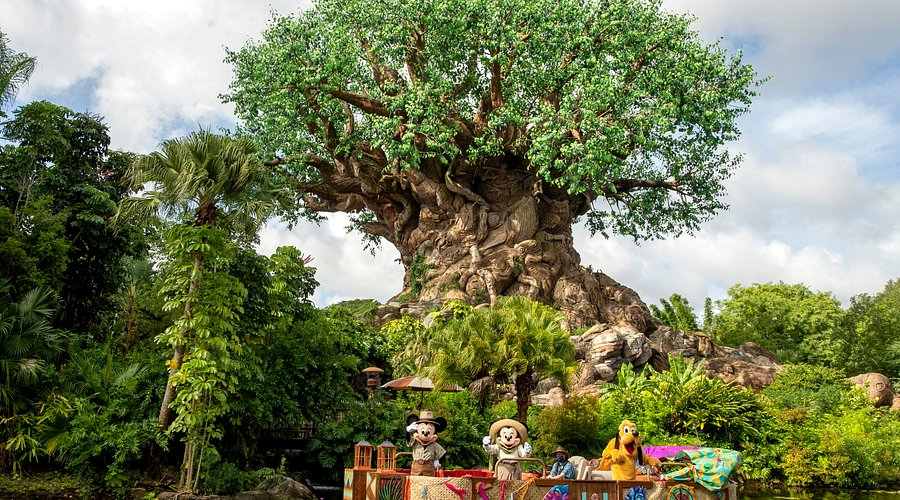

Animal Kingdom
Publicado el 20 de Mayo, 2025
Animal Kingdom es una mezcla fascinante entre parque temático y zoológico, donde la naturaleza y la aventura se combinan para ofrecer una experiencia única. Aquí puedes disfrutar de safaris en vehículos que recorren reservas con animales en hábitats muy cuidados, como elefantes, leones y jirafas.
Además de la parte animal, Animal Kingdom cuenta con atracciones emocionantes, como Expedition Everest, una montaña rusa con temática del Yeti, y Pandora – The World of Avatar, una zona inspirada en la película Avatar que impresiona por sus paisajes y tecnología.
El parque tiene un fuerte enfoque en la conservación y el respeto por la vida silvestre, ofreciendo charlas educativas y experiencias interactivas. También cuenta con espectáculos en vivo, como el famoso Festival of the Lion King.
← Volver al inicioPara quienes aman la naturaleza y buscan aventuras con un toque educativo, Animal Kingdom es el parque perfecto para conectar con el mundo natural y vivir emociones fuertes.